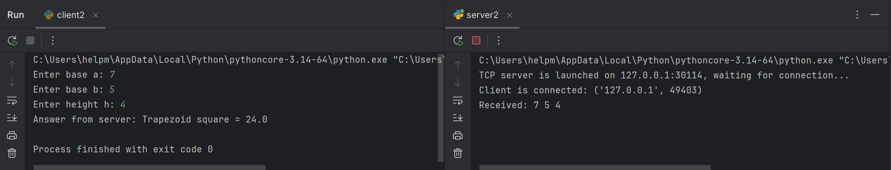
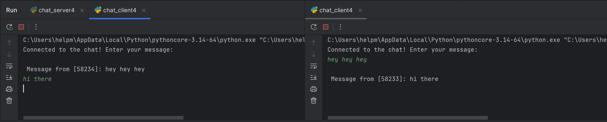
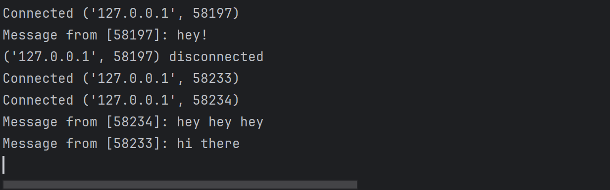
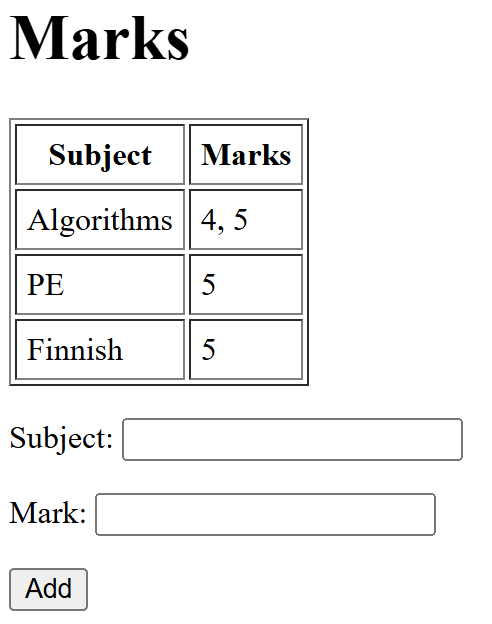
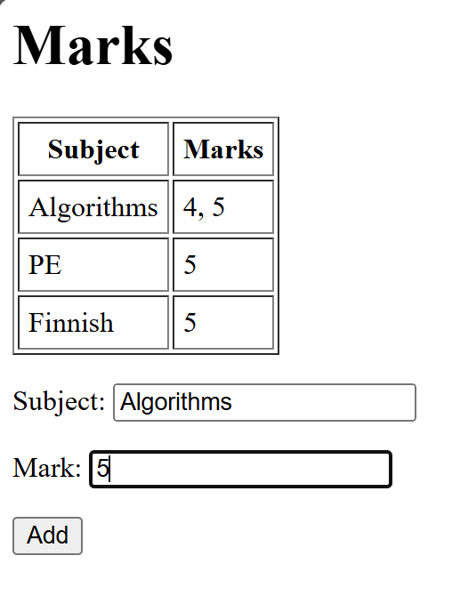
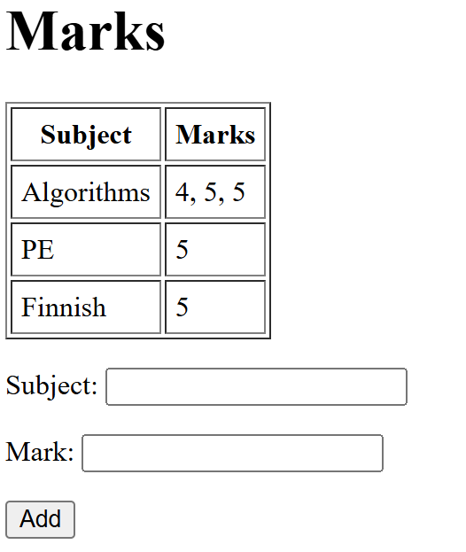

Лабораторная работа №1: Работа с сокетами
Цель работы
Научиться работать с сетевыми сокетами (UDP, TCP, HTTP) и реализовать клиент-серверные программы.
Задание 1: UDP
Сокет
: Программный интерфейс для сетевого обмена данными.
: Представляет конечную точку связи — сочетание IP-адреса, порта и протокола (TCP или UDP).
: Через сокеты процессы на разных компьютерах (или на одном) могут отправлять и принимать данные.
: В Python создаётся функцией socket.socket().
UDP (User Datagram Protocol)
: Транспортный протокол без установления соединения.
: Быстрее, чем TCP, но не гарантирует доставку сообщений и их порядок.
: Использует датаграммы — отдельные пакеты, каждый передаётся самостоятельно.
: В Python клиент отправляет данные с помощью sendto(), а сервер получает через recvfrom().
: Подходит для простых обменов, где потеря некоторых пакетов некритична (например, видео, аудио или учебные примеры).
В этом задании я реализовала клиентскую и серверную часть приложения, используя протокол UDP и библиотеку socket:
Код серверной части:
import socket
HOST = "127.0.0.1" # local adr
PORT = 30114 # port
sock = socket.socket(socket.AF_INET, socket.SOCK_DGRAM)
sock.bind((HOST, PORT))
print(f"UDP server is launched on {HOST}:{PORT}")
while True:
data, addr = sock.recvfrom(1996)
print(f"Received from {addr}: {data.decode()}")
if data:
response = "Hello, client"
sock.sendto(response.encode(), addr) # answer sending
- Создаётся UDP-сокет с параметрами
AF_INET(IPv4) иSOCK_DGRAM(UDP). - Сокет привязывается к адресу
127.0.0.1и порту30114с помощьюbind(). - В бесконечном цикле сервер:
- получает сообщение от клиента функцией
recvfrom(), - выводит полученные данные в консоль,
- формирует строку ответа
"Hello, client"и отправляет её клиенту черезsendto().
Так сервер постоянно ждёт входящих сообщений и на каждое отвечает фиксированной строкой.
Код клиентского приложения:
import socket
SERVER_HOST = "127.0.0.1"
SERVER_PORT = 30114
sock = socket.socket(socket.AF_INET, socket.SOCK_DGRAM)
message = "Hello, server"
sock.sendto(message.encode(), (SERVER_HOST, SERVER_PORT))
print(f"Sent to the server: {message}")
data, addr = sock.recvfrom(1996)
print(f"The answer from server{data.decode()}")
sock.close()
- Создаётся UDP-сокет.
- Клиент формирует строку
"Hello, server"и отправляет её на сервер функциейsendto(). - Получает ответ от сервера функцией
recvfrom(). - Выводит полученные данные в консоль и закрывает соединение с помощью
close().

Задание 2: TCP
TCP (Transmission Control Protocol)
: Транспортный протокол с установлением соединения.
: Обеспечивает надёжную передачу данных: гарантирует доставку и порядок байтов.
: Работает как поток — границ сообщений нет, приложение само должно решать, где заканчивается одно сообщение и начинается другое.
: Подходит там, где важна точность (например, веб-страницы, файлы, базы данных).
Сокет в TCP
: Сервер создаёт сокет, привязывает его к адресу (bind()), переводит в режим ожидания (listen()) и ждёт клиентов (accept()).
: accept() блокируется до подключения клиента и возвращает новый сокет для общения только с ним.
: Клиент создаёт сокет и подключается к серверу через connect().
: Обмен данными выполняется с помощью sendall() (отправка) и recv() (получение).
Различие TCP и UDP
: TCP устанавливает соединение, надёжный и потоковый, но работает медленнее.
: UDP — без соединения, быстрее, но не гарантирует доставку и порядок сообщений.
Код серверного приложения
import socket
HOST = "127.0.0.1"
PORT = 30114
# TCP-server socket
server_socket = socket.socket(socket.AF_INET, socket.SOCK_STREAM)
server_socket.bind((HOST, PORT))
server_socket.listen(1)
print(f"TCP server is launched on {HOST}:{PORT}, waiting for connection...")
while True:
conn, addr = server_socket.accept()
print(f"Client is connected: {addr}")
data = conn.recv(1996).decode()
print(f"Received: {data}")
try:
a, b, h = map(float, data.split())
result = (a + b) / 2 * h
response = f"Trapezoid square: {result}"
except Exception as e:
response = f"Error: {e}"
conn.sendall(response.encode())
conn.close()
- Создаётся TCP-сокет.
- Сокет привязывается к IP-адресу и порту.
- Переводится в режим ожидания подключений (listen()).
- В цикле ожидается клиентское подключение (accept()):
при подключении принимаются данные от клиента;
выполняется вычисление площади по полученным параметрам;
результат передаётся клиенту. - Соединение закрывается, после чего сервер продолжает ожидание новых подключений.
Код клиентского приложения:
import socket
HOST = "127.0.0.1"
PORT = 30114
client_socket = socket.socket(socket.AF_INET, socket.SOCK_STREAM)
client_socket.connect((HOST, PORT))
a = input("Enter base a: ")
b = input("Enter base b: ")
h = input("Enter height h: ")
message = f"{a} {b} {h}"
client_socket.sendall(message.encode())
data = client_socket.recv(1996).decode()
print("Answer from server:", data)
client_socket.close()
- Создаётся TCP-сокет.
- Происхходит подключение к серверу по адресу 127.0.0.1 и порту 30114.
- Запрос у пользователя: основание a, основание b и высота h.
- Формирование строки с этими значениями и отправка серверу через sendall().
- Получение от сервера строки-ответа (с вычисленной площадью трапеции) с помощью recv().
- Вывод результата в консоль.
- Закрытие соединения вызовом close().
Таким образом клиент собирает исходные данные от пользователя, передаёт их серверу и получает обратно вычисленный результат.

Задание 3: HTTP
HTTP (HyperText Transfer Protocol)
: Представляет собой прикладной протокол, используемый для передачи гипертекста (обычно HTML-страниц).
: Работает поверх TCP.
: Клиентом, как правило, выступает браузер, который формирует запросы.
: Сервер принимает запрос, формирует и возвращает ответ.
Структура HTTP-запроса
: Включает стартовую строку (например, GET / HTTP/1.1), набор заголовков (например, Host, User-Agent), пустую строку и (для POST-запросов) тело.
Структура HTTP-ответа
: Состоит из статусной строки (например, HTTP/1.1 200 OK), заголовков (Content-Type, Content-Length), пустой строки и тела ответа (HTML-кода).
Особенности реализации HTTP-сервера
: Запрос читается через recv(), после чего формируется минимальный HTTP-ответ.
: В заголовках обязательно указывается Content-Type, чтобы браузер корректно отобразил страницу.
: В качестве тела ответа используется содержимое HTML-файла или заранее заданная строка.
Код серверного приложения
import socket
HOST = "127.0.0.1"
PORT = 1996
server_socket = socket.socket(socket.AF_INET, socket.SOCK_STREAM)
server_socket.bind((HOST, PORT))
server_socket.listen(1)
print(f"HTTP is running on http://{HOST}:{PORT}")
while True:
conn, addr = server_socket.accept()
print("Connected:", addr)
request = conn.recv(1024).decode()
print("=== HTTP Request ===")
print(request)
# Загрузка HTML из файла
try:
with open("index.html", "r", encoding="utf-8") as f:
body = f.read()
except FileNotFoundError:
body = "<html><body><h1>File index.html is not found</h1></body></html>"
# Формирование HTTP-ответа
response = (
"HTTP/1.1 200 OK\r\n"
"Content-Type: text/html; charset=utf-8\r\n"
f"Content-Length: {len(body.encode())}\r\n"
"\r\n"
f"{body}"
)
conn.sendall(response.encode())
conn.close()
- Создаётся TCP-сокет с параметрами
AF_INETиSOCK_STREAM. - Сокет привязывается к адресу
127.0.0.1и порту1996. - Переводится в режим ожидания подключений с помощью метода
listen(). - В бесконечном цикле выполняются следующие действия:
Ожидается подключение клиента (
accept()), создаётся новый сокет для взаимодействия.
От клиента принимается HTTP-запрос функциейrecv(), содержимое запроса выводится в консоль.
Осуществляется попытка загрузки HTML-страницы из файлаindex.html.
Если файл отсутствует, в качестве тела ответа используется HTML-заглушка.
Формируется корректный HTTP-ответ, включающий статусную строку, заголовки (Content-Type,Content-Length) и тело с HTML-кодом.
Ответ передаётся клиенту методомsendall().
Соединение с данным клиентом закрывается.
В качестве клиента используется веб-браузер: при обращении к адресу http://127.0.0.1:1996 он формирует HTTP-запрос и отображает полученный от сервера HTML-ответ.

Задание 4: Чат
Чат на основе сокетов
: Реализуется по принципу "один сервер — несколько клиентов".
: Сервер принимает подключения от пользователей и обеспечивает пересылку сообщений между ними.
: Для каждого клиента создаётся отдельный поток или процесс, который обрабатывает его сообщения.
: Все полученные от клиента сообщения пересылаются (рассылаются) остальным участникам чата.
Особенности реализации
: Сервер хранит список активных клиентов.
: При поступлении сообщения от одного клиента оно передаётся всем остальным с помощью функции-ретранслятора (broadcast).
: При отключении клиента он удаляется из списка активных подключений.
: Для одновременной работы с несколькими клиентами используется многопоточность (модуль threading) или асинхронное программирование.
Код серверного приложения
import socket
import threading
HOST = "127.0.0.1"
PORT = 30114
clients = []
def handle_client(conn, addr):
print(f"Connected {addr}")
while True:
try:
msg = conn.recv(1996).decode()
if not msg:
break
print(f"{addr}: {msg}")
broadcast(msg, conn)
except:
break
conn.close()
clients.remove(conn)
print(f"{addr} disconnected")
def broadcast(message, sender_conn):
for client in clients:
if client != sender_conn:
client.sendall(message.encode())
server_socket = socket.socket(socket.AF_INET, socket.SOCK_STREAM)
server_socket.bind((HOST, PORT))
server_socket.listen()
print(f"Chat-server is running on {HOST}:{PORT}")
while True:
conn, addr = server_socket.accept()
clients.append(conn)
thread = threading.Thread(target=handle_client, args=(conn, addr))
thread.start()
- Создаётся TCP-сокет.
- Сокет привязывается к IP-адресу и порту.
- Переводится в режим ожидания подключений (
listen()). - В бесконечном цикле:
ожидается подключение нового клиента (
accept());
создаётся отдельный поток для обработки сообщений данного клиента;
поток принимает входящие сообщения и вызывает функциюbroadcastдля рассылки текста всем остальным клиентам;
при отключении клиента соединение закрывается, а он удаляется из списка активных подключений.
Код клиентского приложения
import socket
import threading
HOST = "127.0.0.1"
PORT = 30114
def receive(sock):
while True:
try:
msg = sock.recv(1996).decode()
if msg:
print("\nMessage:", msg)
except:
break
sock = socket.socket(socket.AF_INET, socket.SOCK_STREAM)
sock.connect((HOST, PORT))
# stream for getting messages
thread = threading.Thread(target=receive, args=(sock,))
thread.start()
print("Connected to the chat! Enter your message:")
while True:
msg = input()
sock.sendall(msg.encode())
- Создаётся TCP-сокет.
- Выполняется подключение к серверу (
connect()). - Запускается отдельный поток для получения входящих сообщений и их отображения в консоли.
- В основном цикле клиент вводит сообщения с клавиатуры.
- Каждое введённое сообщение отправляется серверу.
- Соединение может быть закрыто пользователем или при разрыве связи.
Таким образом, чат позволяет нескольким клиентам одновременно обмениваться сообщениями через сервер, который выступает посредником и рассылает их всем участникам.
 
Задание 5: Мини веб-сервер
Веб-сервер с поддержкой GET и POST
: Реализуется на основе TCP-сокета.
: Обрабатывает HTTP-запросы браузера и формирует HTML-страницу с данными.
: Поддерживает два метода:
- GET — используется для запроса страницы и отображения текущих данных.
- POST — применяется для передачи информации от клиента (например, отправки формы).
Особенности реализации
: При обработке POST-запроса тело сообщения парсится, и данные добавляются к общему списку/словарю.
: HTML-страница формируется динамически: отображаются все накопленные данные и форма для добавления новых.
: Для разбора параметров используется функция urllib.parse.parse_qs.
: Сервер простейший, поэтому данные сохраняются только в оперативной памяти.
Код серверной части
import socket
import urllib.parse
HOST = "127.0.0.1"
PORT = 30114
# использую словарь
grades = {}
server = socket.socket(socket.AF_INET, socket.SOCK_STREAM)
server.bind((HOST, PORT))
server.listen(1)
print(f"Server is running: http://{HOST}:{PORT}")
def build_page():
rows = ""
for subj, marks in grades.items():
rows += f"<tr><td>{subj}</td><td>{', '.join(marks)}</td></tr>"
return f"""
<html><body>
<h1>Marks</h1>
<table border="1" cellpadding="5">
<tr><th>Subject</th><th>Marks</th></tr>
{rows}
</table>
<form method="POST">
<p>Subject: <input name="subject"></p>
<p>Mark: <input name="mark"></p>
<p><input type="submit" value="Add"></p>
</form>
</body></html>
"""
while True:
conn, addr = server.accept()
request = conn.recv(2002).decode()
headers, _, body = request.partition("\r\n\r\n")
if request.startswith("POST"):
params = urllib.parse.parse_qs(body)
subj = params.get("subject", [""])[0]
mark = params.get("mark", [""])[0]
if subj and mark:
grades.setdefault(subj, []).append(mark)
page = build_page()
response = "HTTP/1.1 200 OK\r\nContent-Type: text/html; charset=utf-8\r\n\r\n" + page
conn.sendall(response.encode())
conn.close()
- Создаётся TCP-сокет и привязывается к адресу
127.0.0.1:30114. - Сервер переводится в режим ожидания подключений.
- В качестве хранилища используется словарь
grades, где ключом является предмет, а значением — список оценок. - На каждом новом подключении принимается HTTP-запрос.
- При использовании метода
POSTтело запроса разбирается с помощьюurllib.parse.parse_qs(), и данные добавляются в словарь. - HTML-страница формируется функцией
build_page()(таблица с текущими оценками и форма для добавления новых). - Клиенту отправляется HTTP-ответ со статусом
200 OK, заголовкомContent-Type: text/html; charset=utf-8и телом HTML-страницы. - Соединение закрывается.
Добавление оценок пользователь может производить непосредственно на странице в браузере. Каждое действие пользователя обрабатывается как отдельный HTTP-запрос.
-
При открытии страницы в браузере формируется HTTP GET-запрос.
Сервер принимает его, собирает HTML-страницу и отправляет обратно.
После этого соединение с клиентом закрывается (conn.close()). -
При добавлении новой оценки через форму браузер отправляет HTTP POST-запрос.
Сервер принимает данные, обновляет словарьgrades, формирует HTML-страницу с обновлёнными значениями и отправляет её клиенту.
Сразу после отправки ответного сообщения соединение снова закрывается (conn.close()).
Таким образом, в реализации сервера каждое взаимодействие (просмотр страницы или добавление оценки) обрабатывается в рамках нового соединения.
  
Выводы
В ходе выполнения лабораторной работы я реализовала пять заданий, связанных с использованием сокетов в Python.
На практике изучила основные протоколы транспортного уровня (UDP и TCP), а также принципы работы HTTP и взаимодействия клиента и сервера.
Дополнительно был реализован многопользовательский чат и веб-сервер с обработкой GET- и POST-запросов.
До выполнения этой работы опыт написания серверных приложений на Python у меня отсутсвовал.
В процессе выполнения заданий удалось разобраться в базовых функциях модуля socket, освоить структуру HTTP-запросов и ответов.
Кроме того, была получена практика работы с потоками (для чата) и динамическим формированием HTML-страниц (для веб-сервера).
Таким образом, благодаря лабораторной работе были приобретены первоначальные навыки разработки сетевых приложений на Python.